1과목: 대기오염 개론
1. 햇빛이 지표면에 도달하기 전에 자외선의 대부분을 흡수함으로써 지표생물권을 보호하는 대기권의 명칭은?
2. 44m 높이의 연돌에서 배출되는 가스의 평균온도가 250℃이고, 대기의 온도가 25℃ 일 때, 이 굴뚝의 통풍력(mmH2O)은? (단, 표준상태의 가스와 공기의 밀도는 1.3kg/Sm3이고 굴뚝 안에서의 마찰손실은 무시한다.)
3. 다음 대기오염물질과 관련되는 주요 배출업종을 연결한 것으로 가장 적합한 것은?
4. 대기가 가시광선을 통과시키고 적외선을 흡수하여 열을 밖으로 나가지 못하게 함으로써 보온 작용을 하는 것을 무엇이라 하는가?
5. 대기오염이 식물에 미치는 영향에 관한 설명으로 가장 거리가 먼 것은?
6. 오존에 관한 설명으로 옳지 않은 것은?
7. 다음은 황화합물에 관한 설명 중 ( )안에 가장 알맞은 것은?
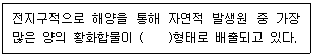
8. 다음 중 지구온난화 지수가 가장 큰 것은?
9. 시정장애에 관한 설명 중 옳지 않은 것은?
10. 석면이 가지고 있는 일반적인 특성과 거리가 먼 것은?
11. A굴뚝으로부터 배출되는 SO2가 풍하측 5000m 지점에서 지표 최고 농도를 나타냈을 때, 유효굴뚝 높이(m)는? (단, Sutton의 확산식을 사용하고, 수직확산계수를 0.07, 대기안정도 지수(n)는 0.25 이다.)
12. 산성비에 관한 설명 중 옳은 것은?
13. 다음 [보기]가 설명하는 주위 대기조건에 따른 연기의 배출형태를 옳게 나열한 것은?
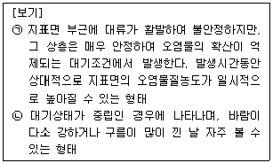
14. 상온에서 녹황색이고 강한 자극성 냄새를 내는 기체로서 공기보다 무겁고 표백작용이 강한 오염물질은?
15. 다음 ( )안에 들어갈 용어로 옳은 것은?
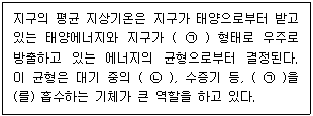
16. 로스앤젤레스 스모그 사건에 대한 설명 중 옳지 않은 것은?
17. 다음 ( )안에 가장 적합한 물질은?
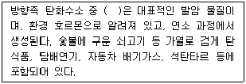
18. 빛의 소멸계수(σext)가 0.45km-1인 대기에서, 시정거리의 한계를 빛의 강도가 초기 강도의 95%가 감소했을 때의 거리라고 정의할 경우 이 때 시정거리 한계(km)는? (단, 광도는 Lambert-Beer 법칙을 따르며, 자연대수로 적용한다.)
19. 안료, 색소, 의약품 제조공업에 이용되며 색소침착, 손·발바닥의 각화, 피부암 등을 일으키는 물질로 옳은 것은?
20. Fick의 확산방정식을 실제 대기에 적용시키기 위한 추가적 가정에 대한 내용과 가장 거리가 먼 것은?
2과목: 연소공학
21. 연료의 연소 시 과잉공기의 비율을 높여 생기는 현상으로 옳지 않은 것은?
22. 다음 가스 중 1Sm3를 완전연소 할 때 가장 많은 이론공기량(Sm3)이 요구되는 것은?(단, 가스는 순수가스임)
23. 기체연료 연소방식 중 예혼합연소에 관한 설명으로 옳지 않은 것은?
24. 가스의 조성이 CH4 70%, C2H6 20%, C3H8 10%인 혼합가스의 폭발범위로 가장 적합한 것은? (단, CH4의 폭발범위 : 5 ~ 15%, C2H6폭발범위 : 3 ~ 12.5%, C3H8폭발범위 : 2.1 ~ 9.5%이며, 르샤틀리의 식을 적용한다.)
25. 다음 설명에 해당하는 기체연료는?
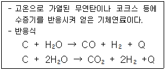
26. 다음 중 기체연료의 확산연소에 사용되는 버너 형태로 가장 적합한 것은?
27. 연소실 열발생율에 대한 설명으로 옳은 것은?
28. 1.5%(무게기준) 황분을 함유한 석탄 1143kg을 이론적으로 완전연소시킬 때 SO2 발생량(Sm3)은?(단, 표준상태 기준이며, 황분은 전량 SO2로 전환된다.)
29. 쓰레기 이송방식에 따라 가동화격자(moving stoker)를 분류할 때 다음 [보기]가 설명하는 화격자 방식은?
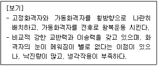
30. 코크스나 목탄 등이 고온으로 될 때 빨간 짧은 불꽃을 내면서 연소하는 것으로, 휘발성분이 없는 고체연료의 연소형태는?
31. 다음 연료 중 착화온도(℃)의 대략적인 범위가 옳지 않은 것은?(오류 신고가 접수된 문제입니다. 반드시 정답과 해설을 확인하시기 바랍니다.)
32. 벙커 C유에 2.5%의 S성분이 함유되어 있을 때 건조 연소가스량 중의 SO2양(%)은? (단, 공기비 1.3, 이론 공기량 12Sm3/kg-oil, 이론 건조연소 가스량 12.5Sm3/kg-oil이고, 연료 중의 황성분은 95%가 연소되어 SO2로 된다.)
33. 배기장치의 송풍기에서 1000Sm3/min의 배기가스를 배출하고 있다. 이 장치의 압력손실은 250 mmH2O이고, 송풍기의 효율이 65%라면 이 장치를 움직이는데 소요되는 동력은(kW)은?
34. [보기]에서 설명하는 내용으로 가장 적합한 유류연소버너는?
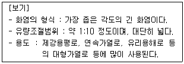
35. 유동층연소에서 부하변동에 대한 적응성이 좋지 않은 단점을 보완하기 위한 방법으로 가장 거리가 먼 것은?
36. 탄소 80%, 수소 15%, 산소 5% 조성을 갖는 액체연료의 (CO2)max(%)는? (단, 표준상태 기준)
37. 메탄 1mol이 공기비로 1.2로 연소할 때의 등가비는?
38. 메탄의 고위발열량이 9900 kcal/Sm3이라면 저위발열량(kcal/Sm3)은?
39. 액화천연가스의 대부분을 차지하는 구성성분은?
40. H2 40%, CH4 20%, C3H8 20%, CO 20%의 부피조성을 가진 기체연료 1Sm3을 공기비 1.1로 연소시킬 때 필요한 실제공기량(Sm3)은?
3과목: 대기오염 방지기술
41. 전기집진장치로 함진가스를 처리할 때 입자의 겉보기 고유저항이 높을 경우의 대책으로 옳지 않은 것은?
42. 다음 각 집진장치의 유속과 집진특성에 대한 설명 중 옳지 않은 것은?
43. 적용 방법에 따른 충전탑(packed tower)과 단탑(plate tower)을 비교한 설명으로 가장 거리가 먼 것은?
44. 먼지함유량이 A인 배출가스에서 C만큼 제거시키고 B만큼 통과시키는 집진장치의 효율산출식과 가장 거리가 먼 것은?
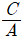
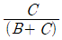
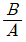
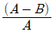
45. 평판형 전기집진장치의 집진판 사이의 간격이 10cm, 가스의 유속은 3m/s, 입자가 집진극으로 이동하는 속도가 4.8cm/s 일 때, 층류영역에서 입자를 완전히 제거하기 위한 이론적인 집진극의 길이(m)는?
46. 습식탈황법의 특징에 대한 설명 중 옳지 않은 것은?
47. 배출가스 중 염화수소 제거에 관한 설명으로 옳지 않은 것은?
48. 가스 중 불화수소를 수산화나트륨 용액과 향류로 접촉시켜 87% 흡수시키는 충전탑의 흡수율을 99.5%로 향상시키기 위한 충전탑의 높이는? (단, 흡수액상의 불화수소의 평형분압은 0이다.)
49. 다음 [보기]가 설명하는 원심력 송풍기는?
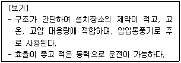
50. 중력집진장치에서 집진효율을 향상시키기 위한 조건으로 옳지 않은 것은?
51. 다음 [보기]가 설명하는 흡착장치로 옳은 것은?
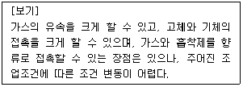
52. 45° 곡관의 반경비가 2.0 일 때, 압력손실계수는 0.27이다. 속도압이 26 mmH2O일 때, 곡관의 압력손실(mmH2O)은?
53. 후드의 종류에 대한 설명으로 옳지 않은 것은?
54. 공기의 유속과 점도가 각각 1.5m/s, 0.0187 cP일 때, 레이놀즈수를 계산한 결과 1950이었다. 이때 덕트 내를 이동하는 공기의 밀도(kg/m3)는 약 얼마인가?(단, 덕트의 직경은 75 mm이다.)
55. 전기집진장치의 각종 장해현상에 따른 대책으로 가장 거리가 먼 것은?
56. 일반적인 활성탄 흡착탑에서의 화재방지에 관한 설명으로 가장 거리가 먼 것은?
57. 광화학현미경을 이용하여 입자의 투영면적을 관찰하고 그 투영면적으로부터 먼지의 입경을 측정하는 방법 중 “입자의 투영면적 가장자리에 접하는 가장 긴 선의 길이”로 나타내는 입경(직경)은?
58. 다음 중 활성탄으로 흡착 시 효과가 가장 적은 것은?
59. 배출가스 중의 NOx 제거법에 관한 설명으로 옳지 않은 것은?
60. 반지름 250 mm, 유효높이 15 m인 원통형 백필터를 사용하여 농도 6g/m3인 배출가스를 20 m3/s로 처리하고자 한다. 겉보기 여과속도를 1.2 cm/s로 할 때 필요한 백필터의 수는?
4과목: 대기오염 공정시험기준(방법)
61. 대기오염공정시험기준상 고성능 이온크로마토그래피의 장치 중 써프렛서에 관한 설명으로 가장 거리가 먼 것은?
62. 굴뚝 배출가스 중 먼지농도를 반자동식 시료채취기에 의해 분석하는 경우 채취장치 구성에 관한 설명으로 옳지 않은 것은?
63. 굴뚝에서 배출되는 건조배출가스의 유량을 계산할 때 필요한 값으로 옳지 않은 것은? (단, 굴뚝의 단면은 원형이다.)
64. 대기오염공정시험기준상 원자흡수분광광도법에서 사용하는 용어의 정의로 옳지 않은 것은?
65. 굴뚝 배출가스 내의 산소측정방법 중 덤벨형(dumb-bell) 자리력 분석계에 관한 설명으로 옳지 않은 것은?
66. 환경대기 중 석면농도를 측정하기 위해 위상차현미경을 사용한 계수방법에 관한 설명으로 ( )안에 알맞은 것은?
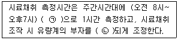
67. 대기오염공정시험기준상 일반화학분석에 대한 공통적인 사항으로 따로 규정이 없는 경우 사용해야 하는 시약의 규격으로 옳지 않은 것은?
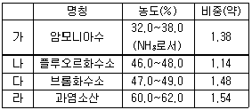
68. 어떤 굴뚝 배출가스의 유속을 피토관으로 측정하고자 한다. 동압 측정 시 확대율이 10배인 경사 마노미터를 사용하여 액주 55 mm를 얻었다. 동압은 약 몇 mmH2O인가? (단, 경사 마노미터에는 비중 0.85의 톨루엔을 사용한다.)
69. 굴뚝 배출가스량이 125 Sm3/h 이고, HCl농도가 200ppm 일 때, 5000L 물에 2시간 흡수시켰다. 이 때 이 수용액의 pOH는? (단, 흡수율은 60% 이다.)
70. 대기오염공정시험기준상 화학분석 일반사항에 대한 규정 중 옳지 않은 것은?
71. 대기오염공정시험기준상 원자흡수분광광도법에서 분석시료의 측정조건결정에 관한 설명으로 가장 거리가 먼 것은?
72. 굴뚝 내의 온도(θs)는 133℃이고, 정압(Ps)은 15 mmHg이며 대기압(Pa)은 745 mmHg이다. 이 때 대기오염공정시험기준상 굴뚝 내의 배출가스 밀도(kg/m3)는? (단, 표준상태의 공기의 밀도(γ0)는 1.3kg/Sm3이고, 굴뚝 내 기체 성분은 대기와 같다.)
73. 고용량공기시료채취기를 이용하여 배출가스 중 비산먼지의 농도를 계산하려고 한다. 풍속이 0.5m/s 미만 또는 10m/s 이상 되는 시간이 전 채취시간의 50% 이상일 때 풍속에 대한 보정계수는?
74. 굴뚝 배출가스 중 아황산가스의 연속자동측정방법의 종류로 옳지 않은 것은?
75. 대기오염공정시험기준상 환경대기 중 정가스상 물질의 시료 채취방법에 관한 설명으로 옳지 않은 것은?
76. 배출가스 중 굴뚝 배출 시료채취방법 중 분석대상기체가 포름알데히드일 때 채취관, 도관의 재질로 옳지 않은 것은?
77. 굴뚝의 배출가스 중 구리화합물을 원자흡수분광광도법으로 분석할 대의 적정파장(nm)은?
78. 대기오염공정시험기준상 비분산적외선분광분석법의 용어 및 장치 구성에 관한 설명으로 옳지 않은 것은?
79. 다음 굴뚝 배출가스를 분석할 때 아연환원 나프틸에틸렌다이아민법이 주 시험방법인 물질로 옳은 것은?
80. 환경대기 중 아황산가스를 파라로자닐린법으로 분석할 때 다음 간섭물질에 대한 제거방법으로 옳은 것은?
5과목: 대기환경관계법규
81. 대기환경보전법령상 황함유기준에 부적합한 유류를 판매하여 그 해당 유류의 회수처리명령을 받은 자는 시·도지사 등에게 그 명령을 받은날로부터 며칠 이내에 이행완료보고서를 제출하여야 하는가?
82. 대기환경보전법령상 자동차 연료형 첨가제의 종류가 아닌 것은?
83. 대기환경보전법령상 용어의 뜻으로 틀린 것은?
84. 대기환경보전법령상 수도권대기환경청장, 국립환경과학원장 또는 한국환경공단이 설치하는 대기오염 측정망의 종류에 해당하지 않는 것은?
85. 대기환경보전법령상 초과부과금 산정기준 중 오염물질과 그 오염물질 1kg당 부과금액(원)의 연결로 모두 옳은 것은?
86. 다음은 대기환경보전법령상 대기오염물질 배출시설기준이다. ( )안에 알맞은 것은?
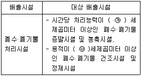
87. 대기환경관계법령상 자가측정 대상 및 방법에 관한 기준이다. ( )안에 알맞은 것은?
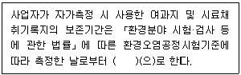
88. 대기환경보전법령상 측정기기의 부착·운영 등과 관련된 행정처분기준 중 사업자가 부착한 굴뚝 자동측정기기의 측정자료를 관제센터로 전송하지 아니한 경우 각 위반 차수별(1차~4차) 행정처분기준으로 옳은 것은?
89. 대기환경보전법령상 위임업무 보고사항 중 자동차 연료 및 첨가제의 제조·판매 또는 사용에 대한 규제현황에 대한 보고횟수 기준은?
90. 악취방지법령상 지정악취물질에 해당하지 않는 것은?
91. 대기환경보전법령상 배출가스 관련부품을 장치별로 구분할 때 다음 중 배출가스자기진단장치(On Board Diagnostics)에 해당하는 것은?
92. 대기환경보전법령상 배출허용기준 준수여부를 확인하기 위한 환경부령으로 정하는 대기오염도 검사기관에 해당하지 않는 것은?
93. 대기환경보전법령상 사업자가 환경기술인을 바꾸어 임명하려는 경우 그 사유가 발생한 날부터 며칠 이내에 임명하여야 하는가?
94. 실내공기질 관리법령상 신축 공동주택의 실내공기질 권고기준으로 틀린 것은?
95. 환경정책기본법령상 미세먼지(PM-10)의 환경기준으로 옳은 것은?(단, 24시간 평균치)
96. 대기환경보전법령상 배출시설 설치허가를 받은 자가 대통령령으로 정하는 중요한 사항의 특정대기유해물질 배출시설을 증설하고자 하는 경우 배출시설 변경허가를 받아야 하는 시설의 규모기준은?(단, 배출시설의 규모의 합계나 누계는 배출구별로 산정한다.)
97. 대기환경보전법령상 기후·생태계변화유발물질과 가장 거리가 먼 것은?
98. 환경정책기본법령상 “벤젠”의 대기환경기준(㎍/m3)은? (단, 연간평균치)
99. 환경정책기본법령상 환경부장관은 국가환경종합계획의 종합적·체계적 추진을 위해 몇 년마다 환경보전중기종합계획을 수립하여야 하는가?
100. 대기환경보전법령상 대기오염 경보의 발령시 단계별 조치사항으로 틀린 것은?(문제 오류로 가답안 발표시 4번으로 발표되었지만 확정답안 발표시 2, 4번이 정답 처리 되었습니다. 여기서는 가답안인 4번을 누르면 정답 처리 됩니다.)